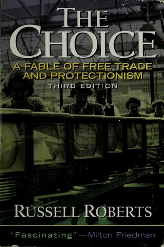

拉塞尔·罗伯茨（Russell Roberts）是斯坦福大学胡佛研究所研究员、广受欢迎的经济学播客节目EconTalk的主持人，也是一位擅长用叙事手法普及经济学原理的作家。《自由的选择：贸易自由与保护主义的寓言》（The Choice）初版于1994年由Prentice Hall出版，2006年推出修订版。这是一本以虚构对话为载体的经济学入门书——罗伯茨让十九世纪英国经济学家大卫·李嘉图（David Ricardo）的幽灵穿越到现代美国，与一位名叫埃德·约翰逊（Ed Johnson）的电视制造商展开关于自由贸易与保护主义的深度对话。这一巧妙的文学装置使得比较优势、贸易逆差、关税效应等抽象概念变得直观而生动。
李嘉图的幽灵带领约翰逊穿越不同的历史情境，展示了贸易保护政策的真实后果。在一个平行世界里，美国对日本电视实施了高关税，约翰逊的工厂因此保住了工作岗位；但李嘉图随即揭示了这个选择的隐性代价——美国消费者为每台电视多付了数百美元，这些本可用于其他消费和投资的资金被浪费了；受保护的产业丧失了创新动力，在全球竞争中进一步落后；而那些原本可以因贸易繁荣而诞生的新产业和新岗位从未出现。罗伯茨通过这种对比手法，揭示了保护主义最致命的陷阱：它的收益集中而可见（被保护的工人和企业），而其代价分散而隐蔽（消费者多付的价格、未曾诞生的创新、错失的增长机会），因此在政治上永远比自由贸易更容易获得支持。
全书的核心论证围绕李嘉图的比较优势原理展开：即使一个国家在所有商品的生产上都优于另一个国家，双方仍然可以通过专业化与贸易实现互利。罗伯茨没有回避自由贸易的痛苦面——工厂关闭、工人失业、社区衰落，这些都是真实的代价。但他通过李嘉图之口指出，贸易自由化的过程类似于技术进步：短期内会造成结构性失业，但长期而言，它释放的生产力提升和资源重新配置将创造出远大于损失的新财富与新机会。罗伯茨特别强调，将贸易视为国家间的零和竞争是一种根本性的误解——贸易的本质是个人与企业之间的自愿交换，它之所以发生，是因为双方都从中获益。
对于关注商业与投资的读者而言，《自由的选择》的价值在于它清晰地展示了经济系统中"看得见的"与"看不见的"之间的关系——这正是十九世纪法国经济学家巴斯夏（Frédéric Bastiat）所强调的核心洞见。在评估任何政策、商业决策或投资机会时，仅仅关注直接的、可见的效果是远远不够的，更重要的是追问那些间接的、被遮蔽的、长远的后果。罗伯茨用一个优雅的寓言，将这个对决策者至关重要的思维习惯植入了读者的心智。